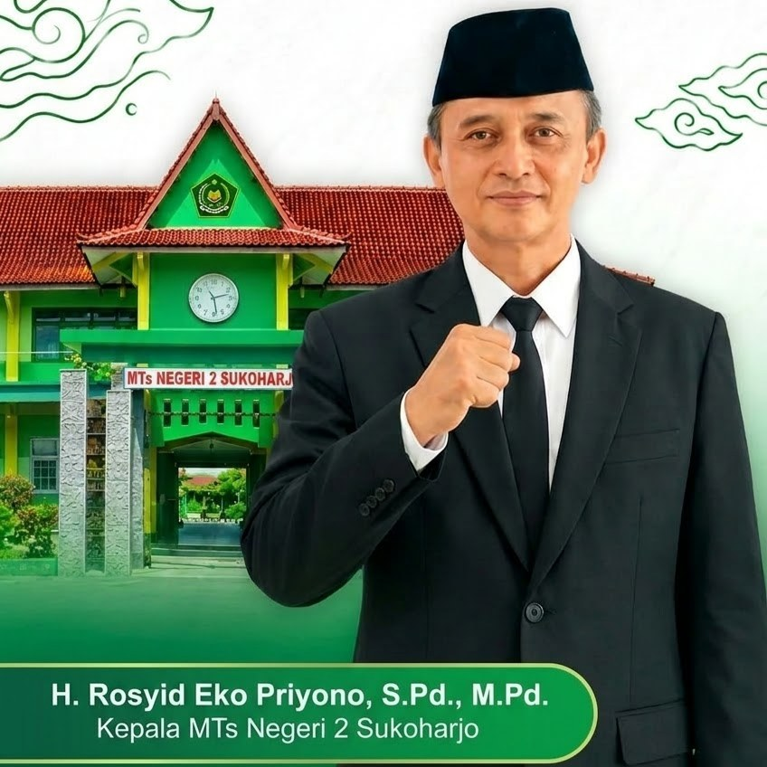

Madrasah Tsanawiyah Negeri · Akreditasi A
Belajar, berprestasi, dan berkarakter di MTsN 2 Sukoharjo
Dari robotik internasional hingga karawitan, siswa kami tumbuh lewat prestasi nyata dan pembinaan karakter sejak 1995.

Profil madrasah

Sambutan kepala madrasah
H. Rosyid Eko Priyono, S.Pd., M.Pd.
Teks sambutan resmi akan dimuat di sini setelah disetujui oleh pihak madrasah.

Sejarah singkat
MTsN 2 Sukoharjo berdiri pada 25 November 1995 (SK 515A Tahun 1995) dan terakreditasi A (SK 220/BAP-SM/X/2016). Madrasah berlokasi di Jl. KH. Agus Salim No. 48, Sukoharjo, Jawa Tengah.

Budaya apresiasi
Setiap tahun madrasah menyerahkan penghargaan kepada siswa dan guru berprestasi, sebagai pemantik semangat berkarya di bidang akademik, olahraga, seni, dan teknologi.
Akademik dan fasilitas
Program unggulan
Kurikulum, kalender akademik, jadwal pelajaran, dan e-learning akan dipublikasikan di bagian ini oleh admin madrasah.

- Masjid
- Laboratorium
- Perpustakaan
- Lapangan
- Kantin
- UKS
Ekstrakurikuler
Arsip prestasi
Berita dan kegiatan
Galeri foto dan video
Video kegiatan
Penerimaan peserta didik baru
Informasi jalur, jadwal, formulir, dan pengumuman hasil akan dibuka oleh panitia PPDB. Hubungi kami untuk informasi terbaru.